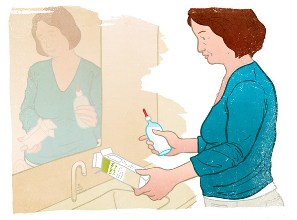
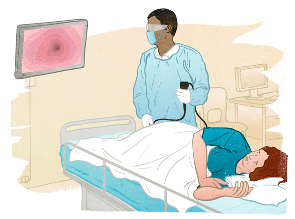
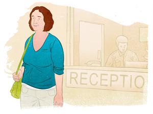
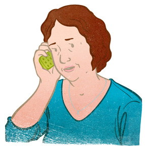

The combination of a flexible sigmoidoscopy with a home stool test is an effective way to look for polyps and early cancer. Polyps are small growths that could become cancer one day. The flexible sigmoidoscopy only looks at part of the colon. It requires no sedation and a relatively simple prep. The procedure can be performed by some primary care doctors and gastroenterologists, but not all doctors perform the procedure regularly. For this reason, it can be hard to get a sigmoidoscopy in certain regions. You'll want to ask and make sure your doctor does them regularly.
Since the sigmoidoscopy only looks at part of the colon, a lot of people wonder if it's a good option. The sigmoidoscopy examines the lower portion of the colon, where many polyps and cancers are found. Combining a sigmoidoscopy with a regular stool test works by letting you know if there’s a reason to have a colonoscopy or not.
The Prep:

You'll need to clean part of your bowel so the doctor has a good chance of seeing polyps. Sigmoidoscopy prep typically includes giving yourself an enema on the evening or morning before the procedure. The doctor will give you specific instructions.
The Procedure:

In the exam room, you'll be with your doctor and a nurse. Once you are comfortable, the doctor will insert a flexible tube into your anus. You might feel pressure or some discomfort, but the procedure shouldn’t be painful. If you do sense pain, tell your doctor so he/she can make adjustments. The doctor will view a screen and carefully look for any problems in your colon. Sedation is not generally needed, but it is available. The exam is over in about 20-30 minutes.
Leaving the office:

After the procedure is done, most people feel mild cramping or bloating. This shouldn’t last too long and will go away as you pass gas. You’ll be able to get dressed, leave on your own, drive, and resume your normal diet and activities unless your doctor tells you otherwise.
It's possible you'll see a little bit of blood in your stool after a sigmoidoscopy. This should go away in a day or two. If the bleeding continues, contact your doctor.
Results:

If any tissue was taken during your sigmoidoscopy, it will be sent to a lab for testing. You should hear results within a week of your procedure, at which time you and your doctor will discuss any necessary follow-up. When done by an experienced doctor, a flexible sigmoidoscopy finds a problem in two-thirds of the people who have something to find. Combining it with home stool testing makes a more comprehensive screening plan. If either of these screening methods reveals a concern, you’ll need to have a colonoscopy.
Follow-up:
If your sigmoidoscopy finds no polyps and you have no other risk factors, a flexible sigmoidoscopy is recommended every 5 years with a stool test every 3 years. It’s important that everybody continue screening regularly between the ages of 50 and 75. Talk with your doctor about the specifics of your screening plan and if you should continue screening past the age of 75.
back to the top of the page